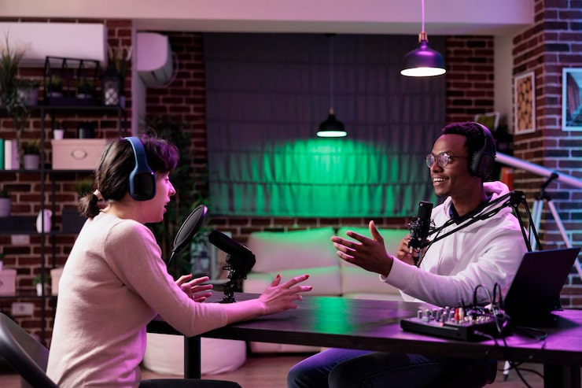

The story behind StoryCast
Stories connect us.
We make room for voices that move us, challenge us, and bring us closer. Because behind every story is a person worth listening to.

Many voices.
Shared humanity.
StoryCast is a design for sharing short audio and video stories. We believe the most meaningful stories come from real people, lived experiences, and the ordinary moments that make us who we are.
Our ambition is to bring diverse perspectives into the same space — from a railroad worker’s lifetime of work to an uncle and nephew looking at the stars. Not to speak for people, but to make more room for them to be heard.
An open door
to every story.
Inclusive storytelling starts with care: listening without assumptions, honoring a storyteller’s own words, and treating every voice with dignity. We value context over stereotypes and curiosity over certainty.
The stories shown here are animated shorts made by StoryCorps from real recorded conversations. We credit them clearly, link to the originals, and never change them.
Different ways to experience. The same sense of belonging.
Access should be part of the story, not an afterthought. We’re designing toward WCAG 2.1 AA, with captions, written transcripts and familiar playback controls. This prototype has not been independently audited or certified.
- Written transcripts for every story
- Captions on by default in the video player
- Keyboard-friendly navigation and visible focus
- Readable contrast (WCAG 2.1 AA)
- No autoplay, no unexpected sound
- Plain language and a clear page structure
Every conversation
starts somewhere.
Have a story to share, a perspective to add, or feedback on accessibility? We’d love to hear it.
Our contact channel will be added before launch. This is a student design prototype. The videos are StoryCorps animated shorts shown through YouTube’s embedded player, and the photographs are stand-in images.